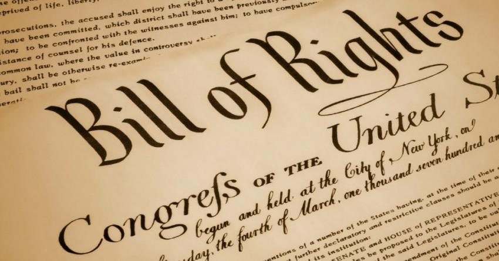

Hi
bold text
italicized text
underlined text
Click Here To See Nothing

The First Six Amendments
Click To Jump To A Certain Amendment
Congress shall make no law respecting an
establishment of religion, or prohibiting the
free exercise thereof; or abridging the freedom of
speech, or of the press; or the right of the people
peaceably to assemble, and to petition the Government
for a redress of grievances.
A well regulated Militia, being necessary to the
security of a free State, the right of the people to
keep and bear Arms, shall not be infringed.
No Soldier shall, in time of peace be quartered in any
house, without the consent of the Owner, nor in
time of war, but in a manner to be prescribed by law.
The right of the people to be secure in their persons,
houses, papers, and effects, against unreasonable
searches and seizures, shall not be violated, and
no Warrants shall issue, but upon probable cause,
supported by Oath or affirmation, and particularly
describing the place to be searched, and the persons
or things to be seized.
No person shall be held to answer for a capital, or
otherwise infamous crime, unless on a presentment or
indictment of a Grand Jury, except in cases arising
in the land or naval forces, or in the Militia,
when in actual service in time of War or public
danger; nor shall any person be subject for the same
offence to be twice put in jeopardy of life or limb;
nor shall be compelled in any criminal case to be
a witness against himself, nor be deprived of life,
liberty, or property, without due process of law;
nor shall private property be taken for public use,
without just compensation.
In all criminal prosecutions, the accused shall enjoy
the right to a speedy and public trial, by an
impartial jury of the State and district wherein the
crime shall have been committed, which district
shall have been previously ascertained by law, and to
be informed of the nature and cause of the
accusation; to be confronted with the witnesses
against him; to have compulsory process for obtaining
witnesses in his favor, and to have the Assistance
of Counsel for his defence.